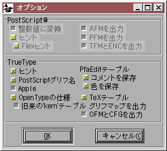

このダイアログでは、アウトラインとビットマップ両方のフォントファイルを出力します。どちらか片方を出力しないようにすることもできますし、AFM ファイルや PFM ファイルを出力したり、 PostScript 出力のタイプや出力するビットマップのピクセルサイズを選択することもできます。
アウトラインの種類は以下のとおりです。
注意: Mac が PostScript フォントを認識するには、ビットマップフォントを NFNT フォーマットで出力して同じディレクトリに置く必要があります。ビットマップフォントをまだ作成していないなら、このダイアログをキャンセルして エレメント(L)→使用するビットマップ(A) を使用してビットマップを作成してからまたこのダイアログに戻って来てください。
注意: Apple はこのフォーマットは廃止予定であり、未来のバージョンでは動作しない可能性があると示唆しています。
ビットマップの種類は以下のとおりです。
注意: Mac OS X は NFNT ビットマップをサポートしないようです (私の試した限りでは動かせませんでした)。それにもかかわらず, Mac は Type1 フォントを認識するためにはいまだに NFNT を最低 1 個は必要とするようです。ビットマップが必要なのに、使われないのです。変ですね。
 オプションダイアログには、以下のチェックボックスがあります。これらのすべてが常に使用可能なわけではありません。
[] 整数値に変換 — すべての座標値を整数に丸めます。これにチェックが入っていない場合は必要に応じて、Type1 フォントは小数点以下第 2 位までの制度で出力され、Type2 フォントは 2 進数で 16 桁までの精度 (10 進数で約 4 桁に相当) で出力されます。
[] ヒント — PostScript のヒントを出力ファイルに含めます。
[] Flexヒント — PostScript の flex ヒントを出力ファイルに含めます。
[] AFMを出力 — Adobe フォントメトリックファイルを出力します (マルチプルマスターフォントでは、.amfm ファイルの出力も制御します)AFM で合成グリフを使用 — AFM フォーマットには複合グリフを部品から構築する機能を含んでいます。ほとんど誰もそれらのデータを使っていないうえに、これを使うと AFM ファイルのサイズが恐ろしく巨大化しますが、それでもこの利用したいならばこのチェックボックスをオンにしてください (フォントにアンカークラスが含まれていない場合、これをチェックしても何の効果もありません)。
[] PFMを出力 — Windows のプリンタフォントメトリックファイルを出力します。
[] TFMとENCを出力 — TeX のフォントメトリックファイル (および TeX の enc エンコーディングファイル) を出力します。
[] ヒント(I) — TrueType のヒントを TrueType フォントに含めます。注意: これは以前は劣悪な TrueType 命令を出力していましたが、現在ではグリフとともに格納されている何らかの命令があったときに、それを挿入するだけにとどめています。それが他の TrueType フォントから読み込まれた物ならば、おそらく適切な物でしょう。もしそれらが FontForge の自動命令づけメニューコマンドによって生成された物ならば、おそらくフォントは余計汚くなるでしょう。
[] PostScriptグリフ名 — 完全版の‘post’テーブルをフォントに含めます。
[] Appleの仕様 — Apple と MS/Adobe では、TTF のフォーマットに相違があります。これは煩わしいことです。このボックスにチェックを入れるとフォントを Apple の希望に沿って出力し、空にしておくと MS/Adobe の希望に沿って出力します。現在これによって以下の事柄が制御されます:
[] OpenTypeの仕様 — ここにチェックが入っている場合、フォント内には OpenType で使用されるテーブルが作成されます。ここと [] Apple の仕様 の両方にチェックが入っている場合、フォントには 2 組のテーブルが格納され、Apple は片方のセットを参照し、他の皆はもう片方を参照するでしょう。
(警告: 上記の記述が正しいのは、10.4 (“Tiger”) より前のバージョンに限られます。OS X 10.4 からは、Apple は OpenType テーブルが存在する時はそれを使用し、AAT テーブルを無視するでしょう。残念ながら Apple は OpenType の全機能を実装していないので、おそらく Apple 機上では間違った)振舞いをするでしょう。
[] 旧来の'kern' — もし OpenType の仕様と同時にこれにチェックをつけると、OpenType の 'GPOS' テーブルと旧来の 'kern' テーブルの両方が出力されます (もちろん、カーニングペアが含まれている場合だけです)。OpenType メーリングリストでは、これは拙劣な考えだとされています (一部のアプリケーションは、両方のテーブルのカーニング値を加えてしまう可能性があるそうです) が、‘GPOS’のカーニングをサポートしていないアプリケーションには有益でしょう。
[] コメントを保存 — 私は、自分が保存したいデータの全部を格納するために自分専用のテーブル (‘PfEd’) を追加しました。このボックスにチェックが入っていると、グリフのコメントをすべて出力ファイルに保存します。
[] 色を保存 — グリフの色を同様に‘PfEd’テーブルに保存します。
[] TeX — TeX のメトリックを‘TeX ’テーブルに保存します。
[] グリフマップを出力 — TrueType (OpenType) グリフ ID をグリフ名 (及び、可能であれば Unicode 値) に対応づけるファイルを (拡張子 .g2n で) 出力します。
[] OFM と CFG を出力 — Omega 用のメトリックファイルを出力します。
TTF (と OpenType) フォントは通常 Unicode エンコーディングで出力され、それに加えて小さな Macintosh 用の MacRoman エンコーディングのテーブル (および Macintosh の Unicode エンコーディングのコピー) も出力されます——例外は以下の通りです: Symbol フォントは Symbol エンコーディングを使用し、KS C 5601 と Wansung のフォントは Wansung を使用し、Johab フォントは johab を、JIS X 0208 と SJIS のフォントは SJIS を、Big5 のフォントは big5 エンコーディングを使用します。“Full Unicode”エンコーディングを持つフォントは、2 バイトの Unicode エンコーディングテーブルと 4 バイトのテーブルの両方を含むことができます。OpenType 形式の CID フォントは Unicode エンコーディングで保存されます。
PostScript フォントは、どのようなエンコーディングでもそのまま出力します (例外として、2 バイトエンコーディングのフォントを (Type0 でなく) Type1 形式で出力した場合、最初の少数 (256 個) のグリフだけが符号化されます)。Type0 フォントは完全版の Unicode (4 バイト) エンコーディングをサポートしません。
PS CID (および OpenType に含まれる CFF 形式の CID) ではエンコーディングは保存されません。エンコーディングは別個の CMap ファイルに含まれており、それらは Adobe (およびおそらく他のフォントベンダ) から入手可能です。
CID フォントを PS CID か OpenType CID 以外のフォーマットで保存した場合、現在表示されているサブフォントのみが、現在の無意味なグリフエンコーディングに従って保存されます (これは、CID フォントから特定のサブフォントを取り出したいときには役に立つと思います)。
SVG フォントには、実質的に Unicode 以外のエンコーディングの概念はありません。
TTF (と OpenType) フォントは、もしそのフォントで縦書きメトリックが使用可能になっている場合、縦書きメトリックを出力します。PostScript エンコーディングは Metrics2 辞書を出力しません (どなたか希望する人がいましたら知らせてください。やれば出来るのですが、誰もそれを使わないだろうという印象を持っています)。
Mac OS X では、PostScript フォントを含むリソースフォントを生成するとき、filename テキストフィールドは存在しないでしょう (ファイル名はフォント名から決定されるからです)。その場合でも、ディレクトリを選択することはできます。
出力するビットマップサイズはフォントデータベースにすべて存在しなければなりません。アンチエイリアス処理したフォントは、ピクセルサイズの後ろに“@<depth>”(例:“@8”) を付け加えることによって指定することができます。
BDF フォントを出力すると、後から解像度を入力するように促されます。
「グリフ名を強制的に変更」フィールドに関する議論については名前リストのセクションを参照してください。
OpenType モードを設定して TrueType または OpenType フォントを出力すると (注意:“OpenType”という用語は 2 つの意味があります。PostScript フォントに対する TrueType ラッパという意味と、組版用の情報を含んだテーブルのセットの意味です。——ここで言う OpenType モードとはテーブルのセットのことです) FontForge は GPOS, GSUB および GDEF テーブルを出力します。これらはカーニング、合字情報、アラビア文字の位置依存の形情報、アンカーポイントなどを含みます。
Apple はこれらの OpenType レイアウトテーブルをサポートしていません。Apple モードを設定したときには、その代りに ‘kern’,‘opbd’,‘morx’,‘feat’,‘lcar’ および‘prop’ テーブルを出力します。(それに加え、その他の小さな相違点が 2, 3 表れます。)
Apple と OpenType の両方を設定している場合、両方のテーブルセットが出力されます。どちらも設定していない場合、‘kern’テーブルのみが出力され、そこにはペア単位のカーニングのみが含まれます (カーニングクラスや状態機械によるカーニングは含まれません)。これはオリジナルの TrueType の仕様に存在した種類のカーニングです (そこから Apple と OpenType の仕様は岐れましたが、どちらも今なおサポートしています)。
これは上に挙げたのと非常に似たダイアログを起動しますが、2, 3 の追加フィールドがあります。このダイアログは Mac ファミリーのためであり、Mac フォーマットのみがサポートされているからです。
[保存(S)] ボタンのそばには、このファミリーに含まれると FontForge が考えた全フォントのリストが、そのビットマップ情報と一緒に表示されています。そのファミリーに含めたくないフォントがある場合は、そのチェックボックスを空にしてください。
ファミリー内で使用可能なフォントスタイルは、特定のタイプにつき一つのスタイルのみが使用可能で、“Light”や“Black”といったスタイル (既に“Bold”スタイルがある場合) や“Oblique”(既に“Italic”がある場合) スタイルをサポートしていない‘FOND’リソースの限界により制約されています。一般的に、FontForge はフォント名からそのフォントのスタイルを推測することが出来ますが、場合によってはその設定をフォント情報ダイアログの Mac スタイルで上書きしたくなることがあるでしょう。
このダイアログの能力を超えるような方法で Mac フォントファミリーを作成するための情報については、FAQ を参照してください。
SVG (Scalable Vector Graphics) フォントには 2 種類の形式があり、片方は PostScript Type1 フォントとほぼ同じで、もう片方は PostScript Type3 フォントとほぼ同じです。
第 1 のフォーマットでは、各グリフは輪郭の集まりによって指定されます。フォントを輪郭線を描画するか、塗りつぶすかを定める指示はありません——その情報は、フォントがテキスト上で使用されるときにグラフィック環境から引き継がれます。
第 2 のフォーマットでは、各グリフには、それを描画するのに必要なストロークおよび塗りつぶしのコマンドを含むことができます。
FontForge は通常第 1 のフォーマットを出力しますが、複数レイヤーまたはストロークフォントに対しては、第 2 のフォーマットで出力します。